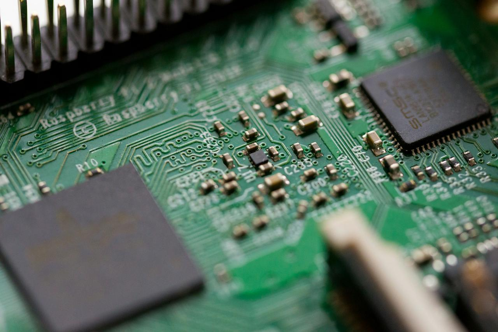
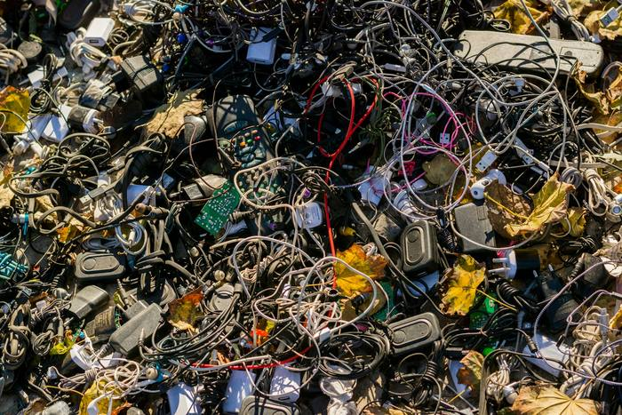

O caminho para um futuro sustentável
Seu eletrônico velho tem lugar certo.
Descubra onde descartar seu eletrônico perto de você. Sem cadastro, em poucos segundos.
Mapa
Pontos de coleta perto de você
Permita a localização e veja primeiro o ponto mais próximo.
Mostrando pontos em Sorocaba/SP.
Modo demonstração. Os pontos abaixo são fictícios e servem só para teste.
Carregando o mapa…
- Carregando pontos de coleta…
Usou o mapa? Dê sua opinião
Como funciona
Três passos. Poucos segundos.
-
Permita a localização
Toque em “Usar minha localização”. Sua posição fica só no seu navegador e não é salva.
-
Veja o ponto mais próximo
A lista se organiza pela distância. O primeiro ponto ganha o selo “Mais próximo”.
-
Siga até lá
Confira o horário e o que o ponto aceita. Depois, toque em “Como chegar” para abrir a rota.

O que descartar
Ligou na tomada ou usa bateria? Vai para a coleta.
- CelularesAntigos, quebrados ou parados na gaveta. Apague seus dados antes.
- Pilhas e bateriasComuns, recarregáveis e baterias de celular, notebook ou câmera.
- Cabos e carregadoresFios, fontes, fones de ouvido e adaptadores.
- Computadores e periféricosNotebooks, teclados, mouses, monitores e impressoras.
- Eletrodomésticos pequenosSecadores, liquidificadores, ferros de passar e rádios.
Nem todo ponto aceita tudo. Confira os itens aceitos nos detalhes de cada ponto. Bateria estufada? Não perfure nem tente remover: leve o aparelho como está e avise no local.
Dúvidas
Perguntas frequentes
Respostas curtas para o que mais aparece na hora de descartar.
O que é lixo eletrônico?
É todo equipamento elétrico ou eletrônico que parou de funcionar ou não é mais usado, junto com suas partes, como cabos, pilhas e baterias. O nome técnico é REEE: resíduos de equipamentos eletroeletrônicos.
Posso jogar pilha no lixo comum?
Não é o indicado. Pilhas e baterias têm metais e outras substâncias que podem contaminar o solo e a água. Baterias amassadas também podem pegar fogo.
A Política Nacional de Resíduos Sólidos (Lei nº 12.305/2010) inclui pilhas, baterias e eletroeletrônicos na logística reversa. Na prática: guarde em um pote fechado e entregue em um ponto de coleta.
Preciso apagar meus dados antes de descartar um celular?
Sim. Faça uma cópia do que quer guardar, saia das suas contas, restaure o aparelho para as configurações de fábrica e retire o chip e o cartão de memória.
Os passos mudam conforme o modelo. Na dúvida, consulte o manual ou o site do fabricante.
O que acontece com o lixo eletrônico descartado errado?
No lixo comum, ele pode acabar em aterros ou em locais inadequados. Ali, substâncias como chumbo e mercúrio podem vazar e contaminar o ambiente. Também se perdem materiais que poderiam ser reaproveitados, como metais e plásticos.
Na coleta certa, o resíduo segue para empresas que separam e dão o destino adequado a cada parte.
Todo ponto aceita qualquer aparelho?
Não. Cada ponto define o que recebe. Alguns aceitam só pilhas; outros, celulares ou computadores. Antes de sair, veja os itens aceitos nos detalhes do ponto e, se puder, ligue para confirmar.
As informações dos pontos são confiáveis?
Cada ponto mostra o status “Verificado” ou “Em verificação” e a fonte da informação. Horários e itens aceitos podem mudar, então vale confirmar com o local antes de ir.
Sobre
Um projeto para tornar o descarte correto simples.
A Ecotroca é um projeto da Usina de Projetos Experimentais (UPx) da Facens. O objetivo é facilitar o descarte correto de eletrônicos, mostrando o ponto de coleta certo mais perto de você.
A ideia nasceu de um projeto técnico anterior e agora ganha a forma de uma plataforma web aberta, pensada para crescer aos poucos.
- Instituição
- Facens — Usina de Projetos Experimentais
- Origem
- Projeto técnico prévio
- Região inicial
- Sorocaba/SP